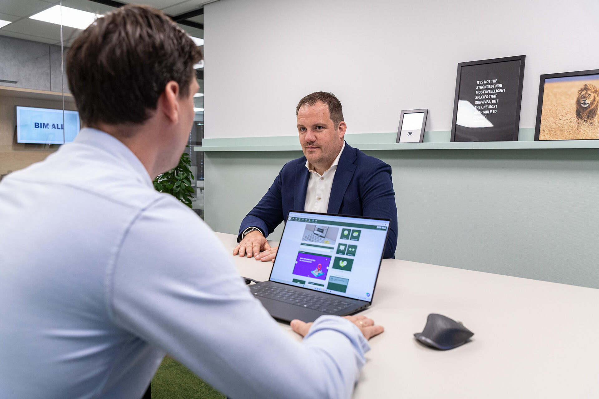
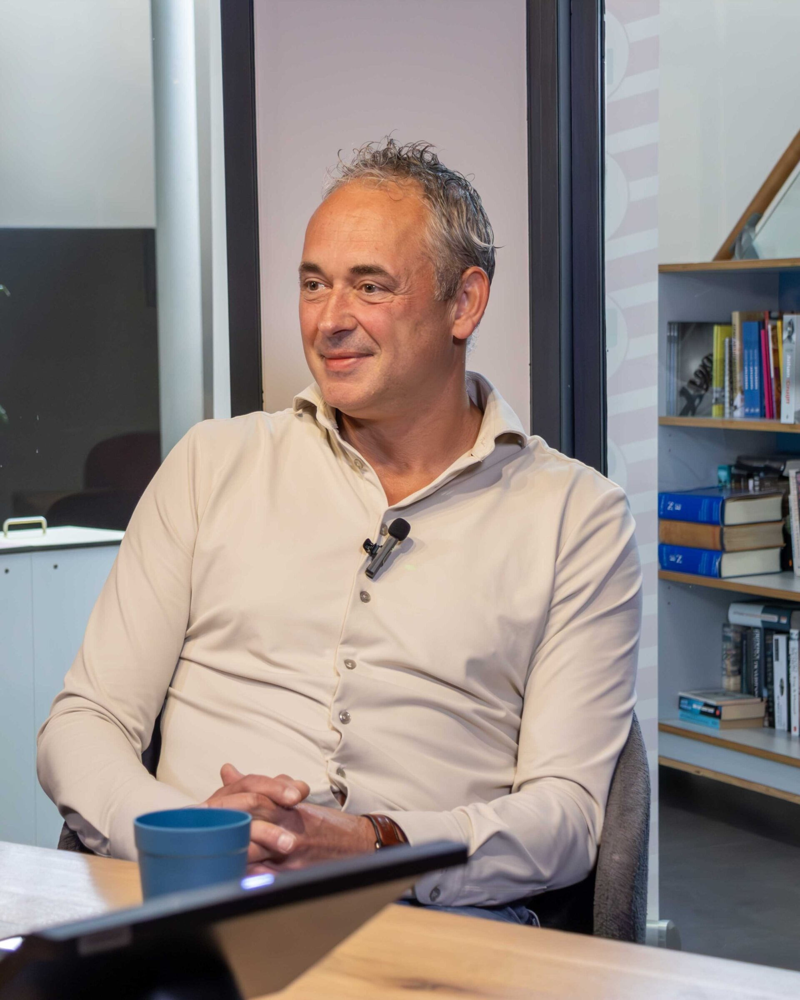

Begin niet met AI. Begin met wat je organisatie wil bereiken.
AI is een middel, geen doel. Het voegt pas waarde toe als strategie, processen, data en mensen op orde zijn. Daar beginnen we, en vaak worden de kansen al zichtbaar voordat er één tool is gekozen.
Waarom AI nu op de agenda staat
Geen hype, wel druk uit de praktijk. Vijf redenen die we bij directies in bouw, installatie en vastgoed telkens terughoren.
Eerst de organisatie, dan de toepassing
Wij kiezen niet eerst een tool en zoeken daarna een probleem. De volgorde is andersom, en de meeste kansen worden bij stap twee en drie al zichtbaar.
- 01StrategieWat wil de organisatie bereiken, en wat niet?
- 02ProcessenWelke werkzaamheden kosten tijd, waar gaat het mis?
- 03Data en applicatiesWelke informatie stroomt waar, in welke systemen?
- 04Kansen en risico'sWat levert waarde op, wat brengt afhankelijkheid mee?
- 05AI-toepassingenPas nu: welke toepassing past, met welke alternatieven?
- 06Adoptie en bijsturenMensen leren ermee werken; elk kwartaal meten en bijstellen.
Concreet werk in bouw, installatie en vastgoed
Geen futuristische beloftes. Dit is waar we AI in de praktijk zien werken, altijd met een mens die controleert en beslist.
Eén is geen
Word niet afhankelijk van één model, platform of leverancier zonder alternatieven, kennis en regie te organiseren. Dit zijn de keuzes die op tafel horen voordat een contract wordt getekend.
De vraag is meestal groter dan de tool
Zo loopt het gesprek vaak. Een vraag over AI blijkt binnen een uur een vraag over processen, data, mensen en koers. Dat is geen probleem; dat is precies waar de waarde zit.
Hollander Techniek: digitalisering als middel, niet als doel
Geen AI-project, wel dezelfde filosofie. Grote verschillen in kennis en werkwijze tussen vestigingen; na de scan en een MT-sessie koos de directie voor één aanpak, een leerpad per functie en een kwartaalritme om bij te stellen. Eerst de organisatie, dan de techniek.
Lees het verhaal →“Digitalisering is geen doel op zich, maar een manier om processen slimmer in te richten, kwaliteit te verhogen en nieuwe klantwaarde te creëren.”

Mark Schuijer · Consultant Business Development, Hollander TechniekWat betekent AI voor jouw organisatie?
Bel of plan een gesprek met iemand die de inhoud kent. Een half uur, geen slides. Wel een eerlijk beeld van waar je staat en wat een eerste stap kan zijn.
We reageren dezelfde werkdag. Liever eerst zelf kijken? Doe de zelfscan.